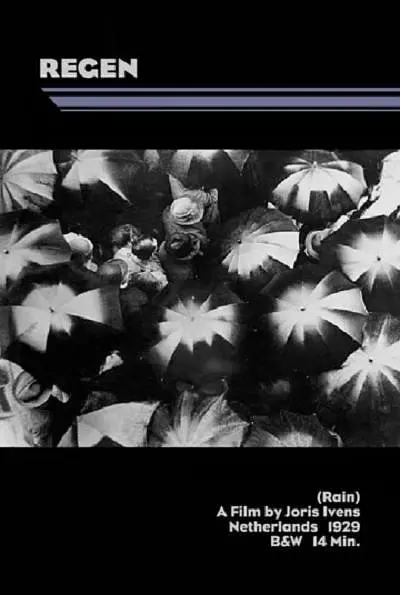

《雨》(Rain)
剧情简介：
- 《雨》用诗意的电影镜头，描绘了一场从坠落到停歇的雨水之旅。透过摄影机之眼，我们跟随着雨水——从车水马龙的街市到人潮涌动的人流。短短十几分钟的记录，是活生生的雨滴在悄然坠落，是积水中荡漾的圆晕在绽放，是云朵流淌下的氤氲在默默隐退……这音乐般流畅的印象派风格，给了我们一份来自大自然的馈赠与解说。
制作过程：
- 导演为了制作这部电影，历时两年在城市的不同地点捕捉雨的踪迹，最终完成了这部关于雨的记录片。
短评：
- 1.大量交叉蒙太奇诗意镜头语言下。城市和城市里的人们退化成背景，看到的只有雨不断变化中的雨。零星打在湖面，涓涓流在窗户上，化成小水滴滴答悬落在屋檐下，又或者积成小水洼呈现整个世界倒影。所有镜头都是破碎的断片而非整体。而把这一切相连接起来的是未知的时间和空间下不同形态的雨，这一本身。也许正因为如此从环境中剥离而出的手法，我们才得以纯粹的观察、感悟到雨之为雨的美。它无形多变、温柔而又清新，仿若溢出了银幕，沁入我们的心灵。
- 2.纪录片大师伊文思的作品，12分钟左右。影片记录了雨前到雨后的情景，雨本身是镜头不易捕捉的，可是却可以通过迹象让我们看见，于是，镜头中出现了人，动物，街道，水洼...虽然是默片，却让人仿佛听见雨声。整部片充满了人文主义色彩，非常温暖。